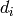
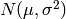

prop2part.py — Proposition preserving partition module
Necmiye Ozay (necmiye@cds.caltech.edu) August 7, 2010
Partition class with following fields
Main function that takes a domain (state_space) and a list of propositions (cont_props), and returns a proposition preserving partition of the state space
rand(d0, d1, ..., dn)
Random values in a given shape.
Create an array of the given shape and propagate it with random samples from a uniform distribution over [0, 1).
random
This is a convenience function. If you want an interface that takes a shape-tuple as the first argument, refer to random.
>>> np.random.rand(3,2)
array([[ 0.14022471, 0.96360618], #random
[ 0.37601032, 0.25528411], #random
[ 0.49313049, 0.94909878]]) #random
randn([d1, ..., dn])
Return a sample (or samples) from the “standard normal” distribution.
If positive, int_like or int-convertible arguments are provided, randn generates an array of shape (d1, ..., dn), filled with random floats sampled from a univariate “normal” (Gaussian) distribution of mean 0 and variance 1 (if any of the  are floats, they are first converted to integers by truncation). A single float randomly sampled from the distribution is returned if no argument is provided.
This is a convenience function. If you want an interface that takes a tuple as the first argument, use numpy.random.standard_normal instead.
random.standard_normal : Similar, but takes a tuple as its argument.
For random samples from , use:
sigma * np.random.randn(...) + mu
>>> np.random.randn()
2.1923875335537315 #random
Two-by-four array of samples from N(3, 6.25):
>>> 2.5 * np.random.randn(2, 4) + 3
array([[-4.49401501, 4.00950034, -1.81814867, 7.29718677], #random
[ 0.39924804, 4.68456316, 4.99394529, 4.84057254]]) #random